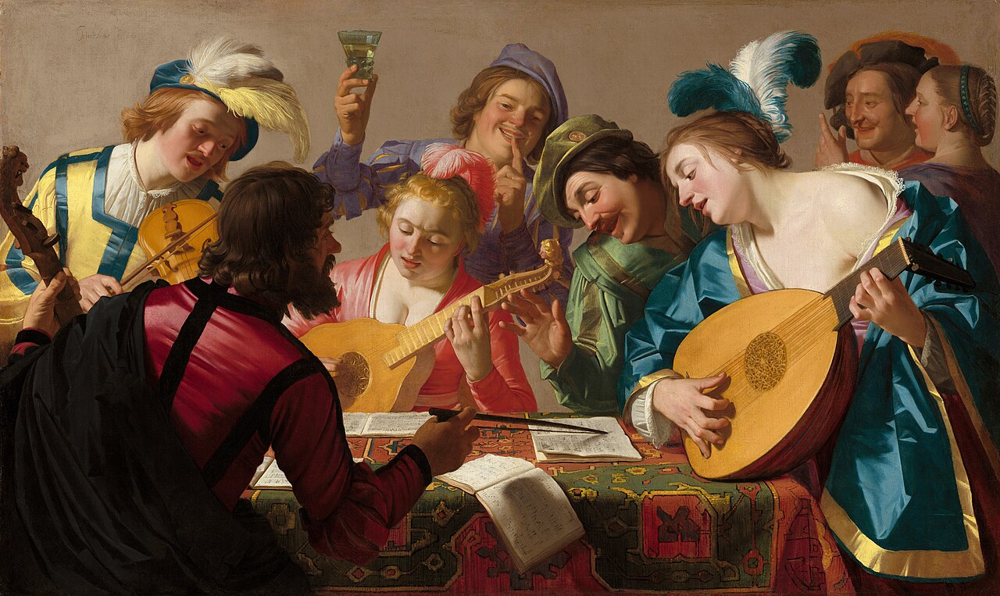
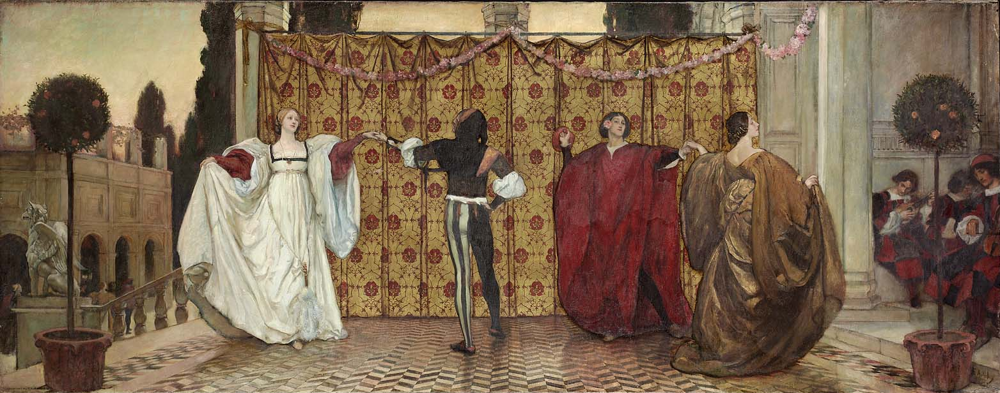

El renacer de la música instrumental
En el Renacimiento, la música instrumental estaba a la sombra de la música vocal, sirviendo de acompañamiento a las danzas y al canto; pero en el siglo XVI, la situación fue cambiando progresivamente y empezó a escribirse una música instrumental autónoma. En un principio, la música instrumental se basó en géneros vocales como el motete o la chanson, pero asumió nombres diferentes: ricercare, canzona, etc. Habrá que esperar al Barroco para que la música instrumental sea completamente independiente de la vocal.
Algunos factores que hicieron posible el desarrollo de la música instrumental son:
- El desarrollo en la fabricación de instrumentos.
- La difusión de tratados teóricos y prácticos de música instrumental gracias a la imprenta.
- La aparición de sistemas de notación que no requerían de grandes conocimientos musicales (tablaturas).

Otro importante procedimiento compositivo para la música instrumental fueron las variaciones (que en España se llamaron diferencias). Sobre un esquema dado, el instrumentista iba variando sucesivamente la melodía original, como en las famosas diferencias sobre Guárdame las vacas, de Luis de Narváez.
Luis de Narváez - Guárdame las vacas
La música para danza también fue muy importante en este periodo. Se adoptó la costumbre de emparejar las danzas de dos en dos: la primera lenta y la segunda rápida, dando lugar a parejas de danzas tan conocidas como la pavana y la gallarda, o el passamezzo y el saltarello.

ESCUCHAMOS PERO NO JUZGAMOS: PAVANA Y GALLARDA
🎧 Audición 7-8
Escucha una pavana y una gallarda.
Tielman Susato - Pavana "La Dona"
Samuel Scheidt - Gallarda "Battaglia XXI"
- Observa el contraste de tempo entre ambas danzas. ¿Cuál es más lenta?
- En el siguiente enlace podrás ver cómo se bailan una pavana y una gallarda. Observa y describe las diferencias que existen entre la forma de bailar cada una de ellas.